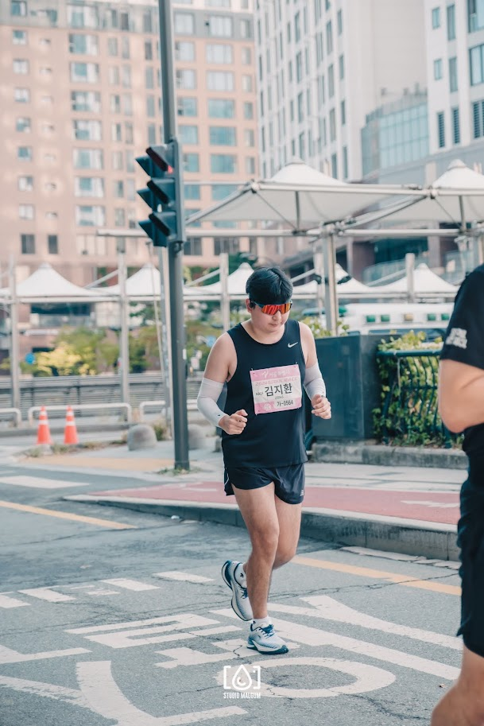

KIM SANGJIN
Country
KOREA
Date of Birth
1963-10-10
Debut
2015
Personal Best
3:33:00 (2024 jtbc)
Pace Ranking
24년 서울마라톤 | 3:30/km
24년 서울마라톤 | 3:30/km
24년 서울마라톤 | 3:30/km
24년 서울마라톤 | 3:30/km
24년 서울마라톤 | 3:30/km
Competition Records
2023 Marathon: 2:35:00

2022 Marathon: 2:45:00
2021 Marathon: 2:55:00
2021 Marathon: 2:55:00
2021 Marathon: 2:55:00
2021 Marathon: 2:55:00
2021 Marathon: 2:55:00